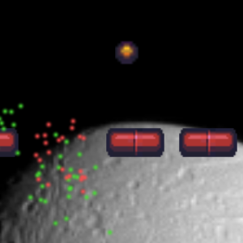

Marco Zamora
Game and Web Development
Intergalactic Breakout
Unity 5 came out around the time I was finishing up two of my classes. I really wanted to play around with Unity so I decided on cloning Breakout. I watched some tutorials to understand the layout and the API documention was fantastic for writing out the scripts. This small project introduced me to several elements of Unity: scene changes, player control, physics, audio, and colliders. It probably took around a couple of hours to put together. I'd love to work with Unity again to make something different.

The space image was courtesy of NASA. The rest of the art is from Open Game Art user Buch. Lastly, the music was by DJ BBä